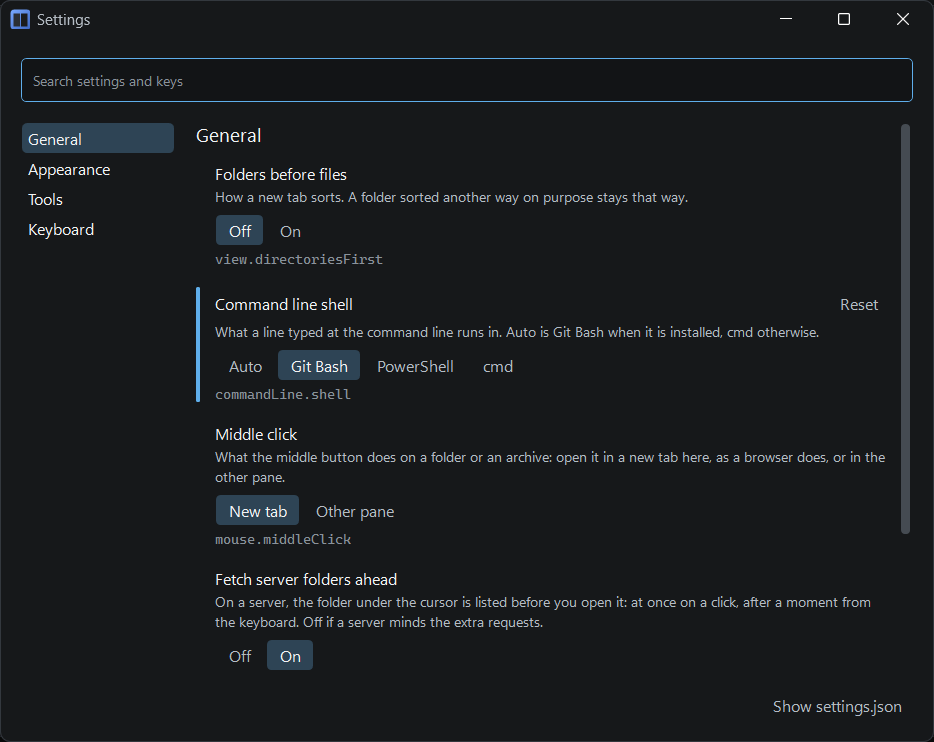
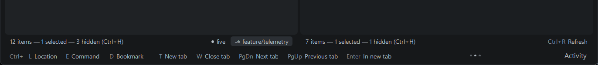
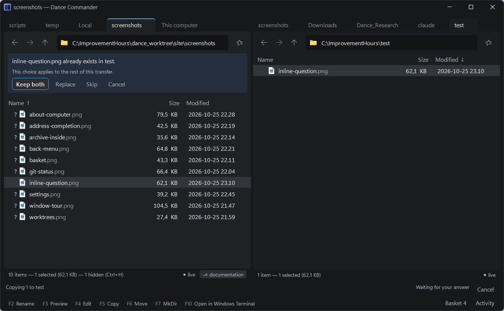

Getting started
Dance Commander is a two-pane file manager you drive from the keyboard. If you have used Norton Commander, Total Commander or Far, your hands already know most of it. If you haven't, the F-key legend along the bottom of the window will teach you as you go.
Installing
You need Windows 10 version 2004 (build 19041) or later on x64. Download one of two files from the releases page:
- The MSI (
DanceCommander-<version>-win-x64.msi) is the recommended one. It installs for your user only, so it needs no administrator rights, adds Dance Commander to the Start menu and to Installed apps, and offers an Open in Dance Commander entry in Explorer's menu. Installing a newer version replaces the old one. - The zip (
DanceCommander-<version>-win-x64.zip) is for trying it without installing. Unpack it anywhere and runDanceCommander.exe. It touches no registry; delete the folder and it is gone.
Your settings live in %APPDATA%\DanceCommander\ and stay when you uninstall or update.
Pin the program to the taskbar if you like.
Building it yourself
You need the .NET 9 SDK.
git clone https://github.com/elefAntti/dance_commander
cd dance_commander
scripts\publish-local.batThis publishes a single, self-contained DanceCommander.exe to
%LOCALAPPDATA%\DanceCommander\. It force-closes a running Dance Commander before
replacing it, so finish what you are doing first. To try a build beside an installed copy, run it
with --new-window:
dotnet run --project src/DanceCommander.App -- --new-windowThe first launch
The first time it starts, Dance Commander sets itself up from what is on your computer:
- Bookmarks for Home, Desktop, Documents and Downloads, and for the folders you have pinned in Explorer's Quick access, in a group of that name.
- Tools for the programs it finds: Git Bash, Windows Terminal, WSL, VS Code, Beyond Compare, Fork and GitKraken, and SHA-256 from Windows itself. They appear in the menus and the palette where they apply, and each set can be switched off in Settings.
- A
tools.jsonholding one example of a tool of your own, switched off.
It says so once, in a line in the pane that doesn't take the keyboard, with Show
bookmarks and Settings… beside it. The files are plain JSON with comments allowed
in %APPDATA%\DanceCommander\, and the application picks up your edits as soon as you
save. See Configuration files.
After that it opens where you left it: the tabs in each pane, which one was in front, one pane or two, and each tab's back and forward history.
Dance Commander runs once per user. Starting it again brings the window you already have forward, and a folder or file handed to it (from the command line, “Open with”, or a program asking it to show a file) opens there in a new tab.
Settings
Ctrl+, opens the settings window. It has four pages: General (the command line's shell, what the middle mouse button does, whether folders sort before files), Appearance, Tools (the tools of each program found, on or off) and Keyboard, where any command's key can be changed. The search box at the top finds a setting or a command by name. A choice takes effect as you make it; there is no Apply, and closing the window is all there is to leaving it.
Dark and light are both first-class. By default the colours follow Windows' app mode and change when it does, and the one accent colour is Windows' own. Either can be fixed in Appearance, along with compact rows and a larger or smaller text size. Windows' contrast themes are followed too: the application takes the theme's own colours.
Every setting is also in the command palette, as “Colour scheme: Light” and the like, so one you change often needs no window at all.

The window
The window has five parts, and that is all it will ever have permanently on screen. Everything else (questions, previews, the command palette, output) appears when it is needed and leaves when you are done with it.
| Part | What it does |
|---|---|
| Pane toolbar | Back, forward and up (hold one, or right-click Back or Forward, for a list to jump along); the location chip (the folder's icon at the left of the address); the address bar; and the Bookmarks button. |
| Tab strip | Each pane has its own tabs, each with its own history. |
| Listing | The files. Name, size and modified date by default; a server adds permissions and owner, a search adds where each match lives. |
| Pane footer | What is true of this folder: how many items, how many selected, how many hidden and the key that shows them, the git branch, and whether the folder is live (updating by itself). |
| Legend | The F-key row. It shares its line with running jobs (copies, builds), the shelf count and the Activity button. |
One pane is active, marked by the accent line along its top. It is where commands act, and the other pane is where copies and moves go. Tab switches between them. Ctrl+1 shows only the active pane; Ctrl+2 brings the second one back.

Let the legend teach you
At rest the legend shows the function keys: F2 Rename, F3 Preview, F5 Copy, F6 Move, F7 New folder. Hold Ctrl, Shift or Alt and it changes to show everything on that layer of the keyboard, grouped by kind. If a layer doesn't fit on one line it pages by itself while you keep holding the key; to turn the page sooner, tap the modifier again, or turn the mouse wheel over the legend. Clicking an entry runs it.
For the rest, press Ctrl+Shift+P. The command palette lists every command that applies where you are, with its key beside it, so a few trips through the palette are how you stop needing it. Type words from a command's name, in any order. The palette remembers what you pick, so the command you use most comes first for the letters you usually type. Ctrl+. is a shorter list: what can be done with the folder you are in.

Five minutes with it
- Go somewhere. Ctrl+L, type the start of a path or a bookmark name; it completes inline. Enter.
- Find a file. Just start typing in the listing. Rows that don't match disappear and the best match gets the cursor. Esc clears it.
- Pick a few. Insert or Space marks the row and moves down. Arrow keys keep the marks. Esc drops them.
- Copy them across. Tab to the other pane, go where they should land, Tab back, F5. The copied files light up briefly where they arrived.
- Change your mind. Ctrl+Z. The Activity button shows what was done and the shell command for each step.
- Look inside something. F3 on a text file or an image. Enter on a zip goes into it like a folder.
Questions are asked in the pane
Dance Commander has no modal dialogs. When it needs a decision (a file already exists, a server wants a password, a host key is new), the question appears inside the pane that needs it. You can leave it there, keep working in the other pane or another tab, and answer when you're ready. Esc dismisses whatever is showing.

Starting from the command line
DanceCommander where you left off
DanceCommander PATH open PATH
DanceCommander LEFT RIGHT one place per pane
DanceCommander /select,PATH PATH's folder, cursor on PATH (as explorer.exe)
DanceCommander --one-pane | --two-panes | --new-window | --helpA PATH can be any address, such as sftp://user@host/var/log or
flat:C:\src. A PATH that is an archive opens it like a folder, and any other file opens
its folder with the cursor on it. Because Explorer's own syntax is accepted as it is, a program's
“Show in folder” can open Dance Commander instead. See
Configuration files for the whole list.